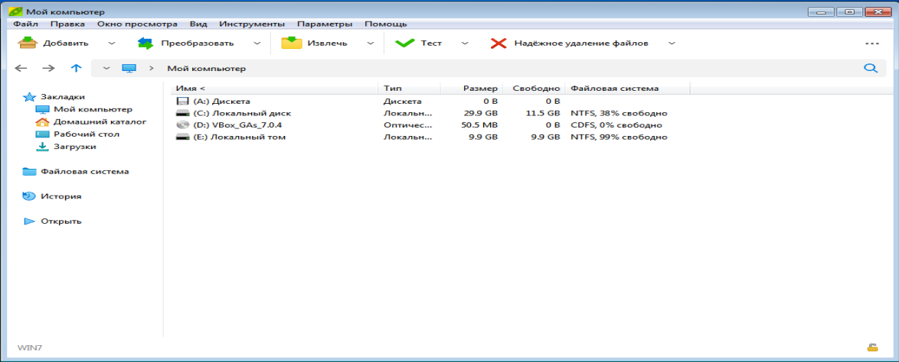
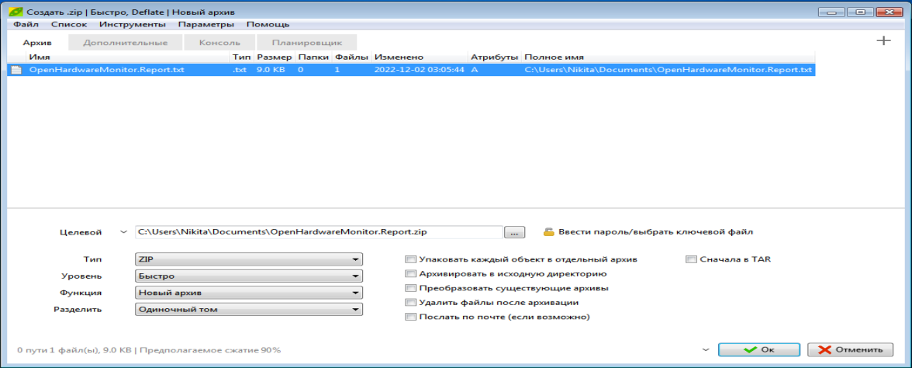
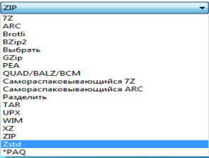
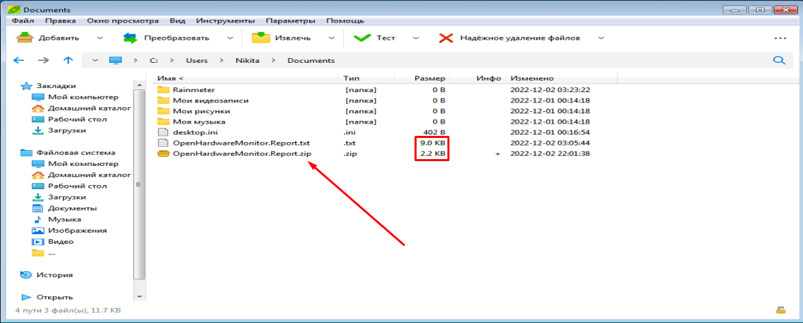
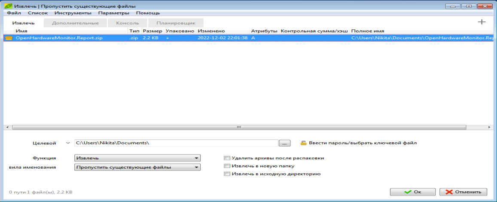
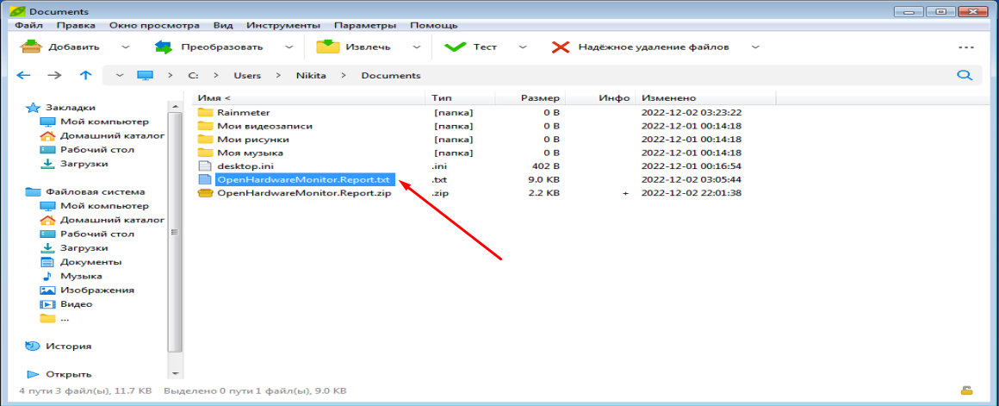

PeaZip – свободный (GNU Lesser General Public License) и бесплатный кроссплатформенный архиватор и графическая оболочка для других архиваторов. Разработчиком данного архиватора является Джорджио Тани.
Инсталляция не представляет собой ничего сложного – скачайте программу и запустите установщик. Следуйте простым инструкциям и дождитесь завершения процесса. После установки приложения мы увидим следующее окно:

Рисунок 5.2.1 – главное окно приложения PeaZip.
Главное окно крайне напоминает стандартный проводник, встроенный в Windows. Сверху имеется главная панель, предназначенная для выполнения основного функционала архиватора, а также дополнительная, которая, как и в 7-Zip, повторяет встроенный в Windows основной функционал и не требуется в разъяснении.
Разберёмся с основным функционалом. Возьмём тот же файл и нажмём на кнопку «Добавить». Мы увидим следующее меню.

Рисунок 5.2.2 – меню кнопки «Добавить».
Можем увидеть, что настроек гораздо меньше, так как они спрятаны от глаз неопытного пользователя во вкладке «Дополнительно». В этой вкладке можно указать размер словаря, размер слова, размер блока и число потоков. В этом окне можно настроить тип архива (формат архива), в который будет запакован файл, указать уровень сжатия, который при наибольшей скорости уменьшает эффективность компрессии, и наоборот, имеется возможность разделения файла на тома. Также справа можно увидеть некоторые дополнительные функции, важной из которых является установка пароля на архив. После проведения настроек, нажмём на кнопку «Ок».

Рисунок 5.2.3 – основные типы архива (форматы архива).

Рисунок 5.2.4 – результат выполнения архивации.
Как видим, появился архив с расширением .zip, размер изменился в 4 раза, что является хорошим показателем.
Рассмотрим обратную процедуру – разархивацию. Нажмём на наш архив, а далее на кнопку «Извлечь». Появится следующее окно:

Рисунок 5.2.5 – окно после нажатия кнопки «Извлечь».
Здесь можно увидеть основные настройки, которые стоит оставлять по умолчанию, слева можно поставить дополнительные функции при извлечении. Опять же, тонкие настройки извлечения файла спрятаны от глаз неопытного пользователя во вкладке «Дополнительно». После проведения настроек мы можем нажать на кнопку «Ок».

Рисунок 5.2.6 – результат извлечения файла.
Как видим, файл принял исходный размер, как и до сжатия.
В заключении, отмечу, что архиватор PeaZip является хорошим архиватором, который крайне приятен в интерфейсе, который крайне дружественен и привычен неопытному пользователю, использует передовые технологии сжатия, достигая за счёт этого хороший уровень компрессии.